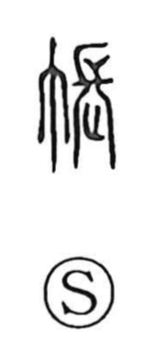

帳

Uncategorized
Kun: tobari | On: cho
curtain ・ mosquito net ・ account book ・ register
Explanation
A phono-semantic graph, 帳 takes 長 as its phonetic, giving the on-reading cho and evoking the idea of something drawn out and stretched. As ancient glosses put it, it is cloth stretched around, so it first denoted hanging or drooping screens: a room curtain (tobari), a drop curtain, and by extension the mosquito net, as in kaya. From the notion of sheets gathered and fastened together, the character broadened to mean a bound set of papers, hence its use in words for notebooks, ledgers, and registers such as chobo, chomen, daicho, and tsucho.